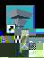

Check to make sure the environment variables for the Microsoft Visual C++ 6.0 compiler is available. The variables are set from a batch file vcvars32.bat provided with the Microsoft installation.
- First, create a desktop icon for Express. This can be done
in two ways:
- Locate the Express.exe (usually in C:\Express\bin\pc) file and drag the file to desktop.
- Or use the pop-up menu for the application (right mouse click) and select Create Shortcut.
-  Then using the icon pop-up menu (select the Rename option), rename the icon to STM.
- Then, using the icon pop-up menu, select the Properties
option.
- Then, selet the Shortcut tab on the properties menu, and
set the Start in: field to be the XPstm directory path.